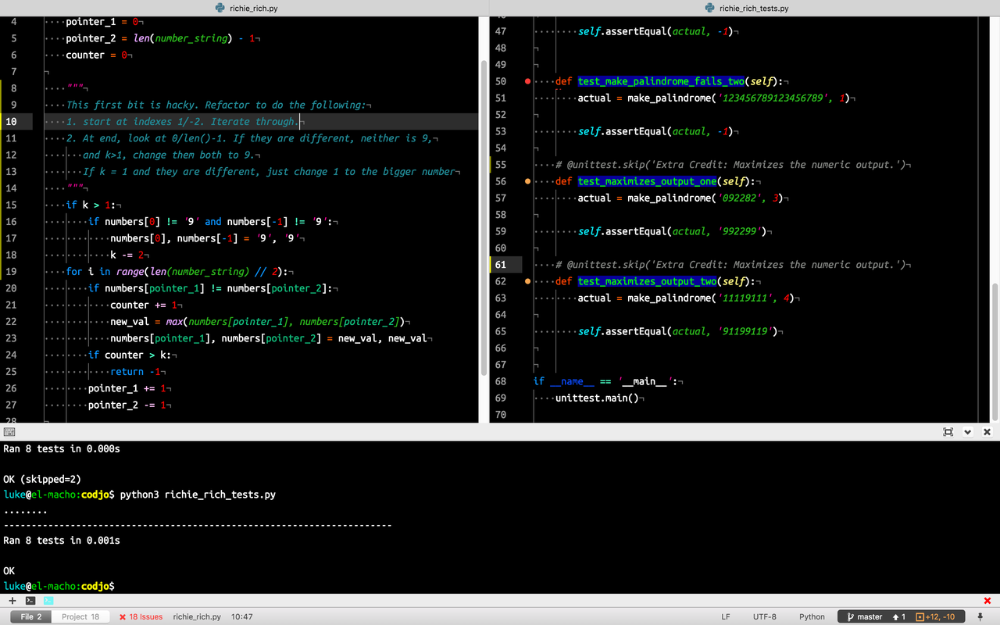

Thoughts after my first codjo
As part of RC Start, the Recurse Center's mentoring program for new(-ish) programmers, I've started taking part in their "codjo" pair programming challenges. The way it works is that you are given a partner and a puzzle to work on.
A few thoughts about it:
Technology gets in the way
Biggest hurdle in getting it done? Figuring out our technology stack for screen sharing. ScreenHero wouldn't let my partner register, even though she had a valid invite. Then it took a while to get Google Hangouts audio working. We spent way too much time getting technology to work…but that seems to be quite a bit of doing development, too.
Remote pair programming forces you to think clearly
We used a driver/navigator system. My partner navigated (said what to do) and I drove (typed the code).
It was important to choose good variable names and write code that we both could understand. Talking things out and getting and giving immediate feedback on how code read felt transformative, in a way. In the past I'd been fearful of going over my code with people (I'd had some bad experiences), but getting to do it in a collaborative, non-judgmental setting was fantastic.
It's great to have all your tools together

While working on the puzzle I was using Atom along with the terminal-plus plugin. This meant my partner and I could run tests and try out code snippets in IPython without having to leave the environment. Super useful. Of course, it also could be super embarrassing, like when I realized my machine's name was out there for the world to see. (It's from The Onion)
Group code reviews are scary but fun
After we finished and submitted our solution there was a group code review. Three groups shared and explained their code. Seeing how other people approached the problem was very helpful – something I love about coding is that you're always able to learn from the code you read. Having the authors explain their thinking and then getting a review of the code from an experienced developer made it even easier to learn.
In summation
Do pair programming. It's worth it.